grepl("^[[:alnum:]._-]+@[[:alnum:].-]+[:alnum:]+$", c("larry@gmail.com", "larry-sally@sally.com", "larry@sally.larry.com", "test@test.com.", "charlottejones-todd"))[1] TRUE TRUE TRUE FALSE FALSEAll BIOSCI 738 lectures require your active involvement! See the course policies for further information.
Throughout this runsheet you’ll find a number of different callout boxes:
A big part of the learning experience in BIOSCI738 comes from you engaging with all the material suggested. Have you familiarised yourself with the BIOSCI738 CANVAS page and the Course policies and FAQs? Let’s see…
What’s the name of my dog? (hint he stars in the introductory video)
Try out the \(R^2\)-D2 AI agent specifically designed for this purpose. I would task yourself with around 30 questions, or until you are completely comfortable with the content (basically Module 1 from BIOSCI 220). If you’re stuck \(R^2\)-D2 will guide you through the answers too!
Each lecture will involve a a few group-based activities/discussion. It is your responsibility to organise yourselves into groups (see below). Feel free to reorganise the tables to suit your needs!
Designate roles:
Determine who is filling each role by order of upcoming birthdays:
In your groups quickly determine who is filling what role.
Once you have allocated group roles your Reporter should come to me to retrieve the first instruction!
Recently, there has been considerable interest in large language models: machine learning systems which produce human-like text and dialogue. Applications of these systems have been plagued by persistent inaccuracies in their output; these are often called “AI hallucinations”. We argue that these falsehoods, and the overall activity of large language models, is better understood as bullshit in the sense explored by Frankfurt (On Bullshit, Princeton, 2005): the models are in an important way indifferent to the truth of their outputs
This is an excerpt from the abstract of Hicks, Humphries, and Slater (2024).
If a student is confused about a concept, they can sit with ChatGPT and it will talk to them for hours about that particular concept.
It is a really great tool to create code but also a really great tool to prevent yourself from learning.
It’s teachers’ responsibility to motivate them and make such a problem that [students] are keen to solve and in a way that they actually would like to learn something and realize that they need these skills also in the future.
…there have always been so many ways of cheating, but I don’t think I’ve ever been aware of such an obvious, cheap, and easy way of cheating. Students can get [an AI tool] to answer any question I can ask them at the moment and therefore I have lost my ability to confidently assess any work that students hand in.
I think we need different kinds of professionals with different understandings of computing. Some need to be very deeply involved with how our programming languages work … others might only need some kind of overall understanding. They are not programmers by themselves, but they still should understand how software is produced.
All the above are quotes garnered in Sheard et al. (2024).
Below generative AI refers to tools that can generate text, code, explanations, or other content in response to prompts (e.g., large language models and AI coding assistants).
Upon the completion of this activity I will summarise the main themes/suggestions from Section 3.5.2 (that I deem appropriate). This will become the class-agreed group working Code of Conduct that you are expected to adhere to during each activity.
As a student of University of Auckland student, you are responsible for understanding and abiding by the requirements of the Student Charter.
In this activity we’re going to be talking about my and your expectation when working in a group during this class, see this section of the course guide for further details.
A Code of Conduct is not just a strange thing the university make you sign. They are a large part of many professional and research-focused bodies beyond university. The following lists just a few examples of societies or institutes you will likely come across during a biostats career in NZ.
For a more in-depth and general discussion I recommend reading Wilson et al. (2017).
Following this section of the course guide let’s talk about what good programming practice looks like in this course.
Honestly, I think the default RStudio behaviour of restoring .RData files etc. just makes everyone lazy…
During this course, very likely in other courses you’ll be taking this semester and in your future careers you will have to deal with many different datasets, wrangle “dirty” data and deal with data from different sources (at the very least). The key thing is to ensure that ANY ANALYSIS YOU CARRY OUT is TRANSPARENT and FULLY REPRODICIBLE (either for your peers or future you). This is where setting good foundations and devising a well-thought-out workflow is imperative!
Some people thing that a writing a large number of lines of code demonstrates prowess. It does not. Surely we’ve all added nonsense to essays to “fill up” the word count!
On the over hand some people strive for carrying out operations in the fewest number of lines possible. This typically makes their work impossible to follow!
I recommend finding a spot you’re comfortable in between the following code snippets.1 Most importantly keep your style readable & consistent!
grepl("^[[:alnum:]._-]+@[[:alnum:].-]+[:alnum:]+$", c("larry@gmail.com", "larry-sally@sally.com", "larry@sally.larry.com", "test@test.com.", "charlottejones-todd"))[1] TRUE TRUE TRUE FALSE FALSEor
email_addresses <- c("larry@gmail.com", "larry-sally@sally.com", "larry@sally.larry.com", "test@test.com.", "charlottejones-todd")
contain_at <- function(x){
grep("@", x)
}
idx <- contain_at(email_addresses)
correct_email <- email_addresses[idx]
correct_email[1] "larry@gmail.com" "larry-sally@sally.com" "larry@sally.larry.com"
[4] "test@test.com." contain_notrailing <- function(x){
grep("^[:alnum:]+", x)
}
idx01 <- contain_notrailing(correct_email)
final_correct_email <- correct_email[idx01]
final_correct_email[1] "larry@gmail.com" "larry-sally@sally.com" "larry@sally.larry.com"R script (or equivalent) is a roadmap to your work.
You should present the cleanest most direct route you can!
I recommend the latter approach below (if you were going to pass on your solution that is). It’s not that each step shouldn’t be carried out. On the contrary, exploring your data via printing and plotting it is very important! But when you have a solution, pare down your script! no need to take everyone on your journey.
## read in data
data <- readr::read_csv("a_valid_filename")
## printing data
print(data)
View(data) ##view opens up new window
data$variable
## Create new data object
newdata <- data$variable
newdata
## plot data
plot(newdata)
## calculate mean
mean <- mean(newdata)
print(mean)
## round
round(mean(newdata))vs
data <- readr::read_csv("a_valid_filename")
round(mean(data$variable))R script (or equivalent) showcases your approch!
There are a few quirks that AI insists on including in R scripts; with a bit of knowledge these are unnecessary. Rightly or wrongly as soon as I see these in a script I become suspicious!
print() statements e.g., print(variable)cat() statements e.g., cat("There are", variable, "students enrolled.\n")Anyone know why these are telltale signs?
I’m going to attempt to do this on the fly. So, when I prompt you yell out an answer to the questions below!
In your groups
Be prepared to discuss your progress/thoughts with me as I wander around the class.
Extra things to think about: Could there be non-linear relationships?, Could there be interaction effects?, Could some predictors be correlated?, Could errors be non-constant or clustered?
Below is some R output showing data summaries and linear model summary output. In your groups, read through and interpret the output then, on the whiteboards sketch the model fit (including uncertainty), for each case.
data# A tibble: 30 × 21
film category `worldwide gross ($m)` `% budget recovered` `critics % score`
<chr> <chr> <dbl> <chr> <chr>
1 Ant-M… Ant-Man 518 398% 83%
2 Ant-M… Ant-Man 623 479% 87%
3 Aveng… Avengers 1395 382% 76%
4 Aveng… Avengers 2797 699% 94%
5 Aveng… Avengers 2048 683% 85%
6 Black… Black P… 1336 668% 96%
7 Black… Black P… 855 342% 84%
8 Black… Unique 379 190% 79%
9 Capta… Captain… 370 264% 79%
10 Capta… Captain… 1151 460% 90%
# ℹ 20 more rows
# ℹ 16 more variables: `audience % score` <chr>,
# `audience vs critics % deviance` <chr>, budget <dbl>,
# `domestic gross ($m)` <dbl>, `international gross ($m)` <dbl>,
# `opening weekend ($m)` <dbl>, `second weekend ($m)` <dbl>,
# `1st vs 2nd weekend drop off` <chr>, `% gross from opening weekend` <dbl>,
# `% gross from domestic` <chr>, `% gross from international` <chr>, …str(data)tibble [30 × 21] (S3: tbl_df/tbl/data.frame)
$ film : chr [1:30] "Ant-Man" "Ant-Man & The Wasp" "Avengers: Age of Ultron" "Avengers: End Game" ...
$ category : chr [1:30] "Ant-Man" "Ant-Man" "Avengers" "Avengers" ...
$ worldwide gross ($m) : num [1:30] 518 623 1395 2797 2048 ...
$ % budget recovered : chr [1:30] "398%" "479%" "382%" "699%" ...
$ critics % score : chr [1:30] "83%" "87%" "76%" "94%" ...
$ audience % score : chr [1:30] "85%" "80%" "82%" "90%" ...
$ audience vs critics % deviance: chr [1:30] "-2%" "7%" "-6%" "4%" ...
$ budget : num [1:30] 130 130 365 400 300 200 250 200 140 250 ...
$ domestic gross ($m) : num [1:30] 180 216 459 858 678 700 453 183 176 408 ...
$ international gross ($m) : num [1:30] 338 406 936 1939 1369 ...
$ opening weekend ($m) : num [1:30] 57 75.8 191 357 257 202 181 80.3 65 179 ...
$ second weekend ($m) : num [1:30] 24 29 77 147 114 111 66 25.8 25 72.6 ...
$ 1st vs 2nd weekend drop off : chr [1:30] "-58%" "-62%" "-60%" "-59%" ...
$ % gross from opening weekend : num [1:30] 31.8 35 41.7 41.6 38 28.9 48.6 43.8 36.8 43.9 ...
$ % gross from domestic : chr [1:30] "34.7%" "34.7%" "32.9%" "30.7%" ...
$ % gross from international : chr [1:30] "65.3%" "65.2%" "67.1%" "69.3%" ...
$ % budget opening weekend : chr [1:30] "43.8%" "58.3%" "52.3%" "89.3%" ...
$ year : num [1:30] 2015 2018 2015 2019 2018 ...
$ source : chr [1:30] "https://www.the-numbers.com/movie/Ant-Man#tab=summary" "https://www.the-numbers.com/movie/Ant-Man-and-the-Wasp#tab=summary" "https://www.the-numbers.com/movie/Avengers-Age-of-Ultron#tab=summary" "https://www.the-numbers.com/movie/Avengers-Endgame-(2019)#tab=summary" ...
$ critics_score : num [1:30] 83 87 76 94 85 96 84 79 79 90 ...
$ budget_recovered : num [1:30] 398 479 382 699 683 668 342 190 264 460 ...##### ##### ##### ###
##### Model 1 #######
##### ##### ##### ###
data %>%
lm(budget_recovered ~ critics_score, data = .) |>
summary()
Call:
lm(formula = budget_recovered ~ critics_score, data = .)
Residuals:
Min 1Q Median 3Q Max
-240.48 -101.16 -27.18 108.53 410.57
Coefficients:
Estimate Std. Error t value Pr(>|t|)
(Intercept) -242.513 215.335 -1.126 0.26964
critics_score 8.472 2.585 3.278 0.00279 **
---
Signif. codes: 0 '***' 0.001 '**' 0.01 '*' 0.05 '.' 0.1 ' ' 1
Residual standard error: 156.8 on 28 degrees of freedom
Multiple R-squared: 0.2773, Adjusted R-squared: 0.2515
F-statistic: 10.74 on 1 and 28 DF, p-value: 0.002795##### ##### ##### ###
##### Model 2 #######
##### ##### ##### ###
names(table(data$category)) [1] "Ant-Man" "Avengers" "Black Panther" "Captain America"
[5] "Dr Strange" "Guardians" "Iron Man" "Spider-Man"
[9] "Thor" "Unique" mod <- data %>%
lm(budget_recovered ~ category, data = .)
mod |> summary()
Call:
lm(formula = budget_recovered ~ category, data = .)
Residuals:
Min 1Q Median 3Q Max
-227.25 -95.92 -11.50 71.25 341.60
Coefficients:
Estimate Std. Error t value Pr(>|t|)
(Intercept) 438.500 109.360 4.010 0.000688 ***
categoryAvengers 170.750 133.938 1.275 0.216977
categoryBlack Panther 66.500 154.658 0.430 0.671808
categoryCaptain America -57.167 141.183 -0.405 0.689841
categoryDr Strange 4.500 154.658 0.029 0.977076
categoryGuardians 5.500 154.658 0.036 0.971984
categoryIron Man -9.167 141.183 -0.065 0.948876
categorySpider-Man 283.500 141.183 2.008 0.058339 .
categoryThor -64.000 133.938 -0.478 0.637950
categoryUnique -135.100 129.397 -1.044 0.308906
---
Signif. codes: 0 '***' 0.001 '**' 0.01 '*' 0.05 '.' 0.1 ' ' 1
Residual standard error: 154.7 on 20 degrees of freedom
Multiple R-squared: 0.4977, Adjusted R-squared: 0.2717
F-statistic: 2.202 on 9 and 20 DF, p-value: 0.06791##### ##### ##### ###
##### Model 3 #######
##### ##### ##### ###
mod <- data %>%
lm(budget_recovered ~ critics_score + category, data = .)
mod |> summary()
Call:
lm(formula = budget_recovered ~ critics_score + category, data = .)
Residuals:
Min 1Q Median 3Q Max
-221.617 -82.872 1.029 59.007 310.560
Coefficients:
Estimate Std. Error t value Pr(>|t|)
(Intercept) 26.257 279.136 0.094 0.9260
critics_score 4.850 3.041 1.595 0.1272
categoryAvengers 163.475 129.131 1.266 0.2208
categoryBlack Panther 42.250 149.789 0.282 0.7809
categoryCaptain America -63.633 136.092 -0.468 0.6454
categoryDr Strange 21.475 149.395 0.144 0.8872
categoryGuardians -11.475 149.395 -0.077 0.9396
categoryIron Man 8.616 136.488 0.063 0.9503
categorySpider-Man 251.167 137.534 1.826 0.0836 .
categoryThor -15.501 132.585 -0.117 0.9082
categoryUnique -74.961 130.253 -0.576 0.5717
---
Signif. codes: 0 '***' 0.001 '**' 0.01 '*' 0.05 '.' 0.1 ' ' 1
Residual standard error: 149 on 19 degrees of freedom
Multiple R-squared: 0.557, Adjusted R-squared: 0.3239
F-statistic: 2.389 on 10 and 19 DF, p-value: 0.04909##### ##### ##### ###
##### Model 4 #######
##### ##### ##### ###
data <- data %>%
rename(., "worldwide" = `worldwide gross ($m)`, "domestic" = `domestic gross ($m)`,
"international" = `international gross ($m)`)
mod <- lm(worldwide ~ 0 + domestic + international, data = data)
mod |> summary()
Call:
lm(formula = worldwide ~ 0 + domestic + international, data = data)
Residuals:
Min 1Q Median 3Q Max
-1.4167 -0.3363 0.4036 0.6414 0.8259
Coefficients:
Estimate Std. Error t value Pr(>|t|)
domestic 1.0016977 0.0010233 978.9 <2e-16 ***
international 0.9995891 0.0006227 1605.3 <2e-16 ***
---
Signif. codes: 0 '***' 0.001 '**' 0.01 '*' 0.05 '.' 0.1 ' ' 1
Residual standard error: 0.6566 on 28 degrees of freedom
Multiple R-squared: 1, Adjusted R-squared: 1
F-statistic: 4.147e+07 on 2 and 28 DF, p-value: < 2.2e-16##### ##### ##### ###
##### Model 5 #######
##### ##### ##### ###
mod <- lm(worldwide ~ budget*critics_score, data = data)
mod |> summary()
Call:
lm(formula = worldwide ~ budget * critics_score, data = data)
Residuals:
Min 1Q Median 3Q Max
-491.98 -169.76 -36.49 153.46 792.52
Coefficients:
Estimate Std. Error t value Pr(>|t|)
(Intercept) 1936.38319 1685.07029 1.149 0.2610
budget -12.31026 8.23297 -1.495 0.1469
critics_score -26.74895 19.92735 -1.342 0.1911
budget:critics_score 0.22214 0.09679 2.295 0.0301 *
---
Signif. codes: 0 '***' 0.001 '**' 0.01 '*' 0.05 '.' 0.1 ' ' 1
Residual standard error: 298.6 on 26 degrees of freedom
Multiple R-squared: 0.7479, Adjusted R-squared: 0.7189
F-statistic: 25.72 on 3 and 26 DF, p-value: 6.07e-08Below is an excerpt taken from Fisher (1926).2
If one in twenty does not seem high enough odds, we may, if we prefer it, draw the line at one in fifty (the 2 per cent. point), or one in a hundred (the 1 per cent. point). Personally, the writer prefers to set a low standard of significance at the 5 per cent. point, and ignore entirely all results which fail to reach this level. A scientific fact should be regarded as experimentally established only if a properly designed experiment rarely fails to give this level of significance. The very high odds sometimes claimed for experimental results should usually be discounted, for inaccurate methods of estimating error have far more influence than has the particular standard of significance chosen. – Page 504, Fisher (1926).
How long does it take Cai (my Vizsla you have already ‘met’) or Kobe (his best friend whom we’re currently dog-sitting) to find a hidden treat in minutes!
require(tidyverse)
data <- data.frame(Pet = rep(c("Kobe", "Cai"), each = 4),
Time = c(7,6,4,1.5,5,6,9.5,3))
means <- data %>%
group_by(Pet) %>%
summarise(means = round(mean(Time), 3))
vars <- data %>%
group_by(Pet) %>%
summarise(vars = round(var(Time), 3))
ggplot(data, aes(x = Pet, y = Time, col = Pet)) + geom_violin() + geom_point(aes(col = Pet), size = 3) +
xlab("") + ylab("Time taken to find treat (m)") + theme_light() +
annotate(geom = "text", x = means$Pet, y = means$means, label = paste("mu == ", means$means), parse = TRUE, col = c("#80CFF0", "#DFC0D0"), size = 6) +
annotate(geom = "text", x = vars$Pet, y = (means$means) - 0.75, label = paste("sigma^2 == ", vars$vars), parse = TRUE, col = c("#80CFF0", "#DFC0D0"), size = 6) +
scale_color_manual(values = c("#80CFF0", "#DFC0D0"))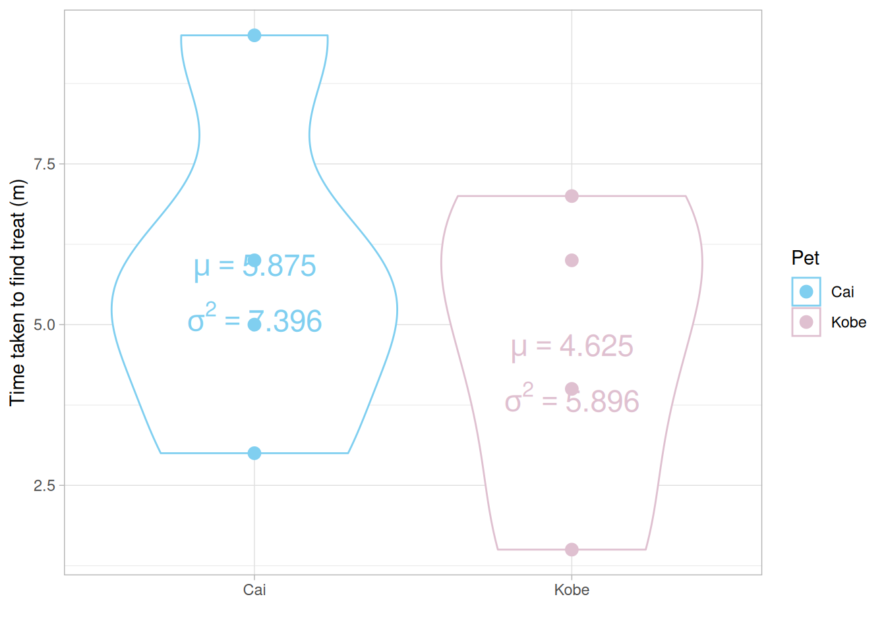
Q Do you think the means of each group are significantly different from each other? Why or why not? Q Do you think the variances of each group are significantly different from each other? Why or why not?
How many times can you rearrange 8 values into two groups, each of size 4? Remember \(\binom{n}{k} = \frac{n!}{k!(n-k)!}\) the binomial coefficient! In our case, \(\binom{8}{4}\). Luckily R has the function choose(8,4)!
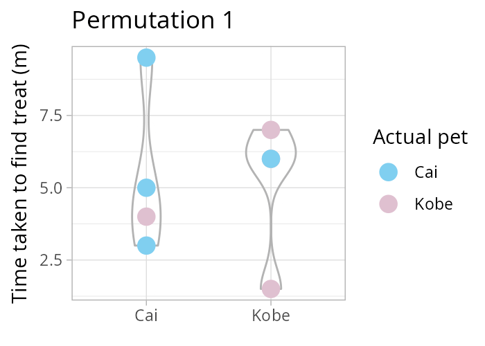
Using a permutation test (i.e., one that considers all possible re-combinations of our data, see animation above) we test the following hypothesis
NULL \(H_0: \mu_\text{Cai} = \mu_\text{Kobe}\) vs alternative \(H_1: \mu_\text{Cai} \neq \mu_\text{Kobe}\).
mean_diff <- means %>%
summarise(diff = diff(means)) %>%
as.numeric()
mean_diff
combinations <- combn(8,4) ## 70 in total
permtest_combinations <- apply(combinations, 2, function(x)
mean(data$Time[x]) - mean(data$Time[-x]))
p_val <- length(permtest_combinations[abs(permtest_combinations) >= abs(mean_diff)]) / choose(8,4)
p_val
## To be honest, all we've really done is carried out a t-test without the
## associated assumptions, compare this to the output from `t.test()`.
t.test(Time ~ Pet, data = data)BUT what if it wasn’t just a vanilla statistic we were interested in?
In your groups
Be prepared to discuss your progress/thoughts with me as I wander around the class.
A randomization test is really just a incomplete permutation test (i.e., one where we can’t be bothered, or have the computational power, to compute all possible combinations). For a randomization test we reshuffle randomly and hope that we do this enough times to construct a sampling distribution of our test statistic under the NULL hypothesis.

Let’s move on to some slightly more colourful data! Below is a subset of the data explored in Klemm and Jones-Todd (2026), where each vector gives the dominant colour of the surprise song3 outfit Taylor Swift wore during that leg of her Eras tour.

first_leg_outfits <- c("Pink", "Green", "Pink", "Green", "Green", "Pink", "Yellow",
"Pink", "Green", "Yellow", "Pink", "Green", "Green", "Pink",
"Yellow", "Pink", "Green", "Yellow", "Pink", "Yellow", "Green",
"Yellow", "Green", "Pink", "Pink", "Green", "Yellow", "Pink",
"Green", "Yellow", "Pink", "Yellow", "Yellow", "Pink", "Green",
"Pink", "Pink", "Yellow", "Yellow", "Pink", "Green", "Pink",
"Pink", "Yellow", "Pink", "Pink", "Pink", "Pink", "Yellow", "Green",
"Blue", "Blue", "Pink", "Green", "Yellow", "Blue", "Pink", "Yellow",
"Yellow", "Blue", "Green", "Blue", "Yellow", "Green", "Blue",
"Yellow", "Pink", "Green", "Yellow", "Pink", "Blue", "Pink",
"Blue", "Yellow", "Green", "Yellow", "Green", "Pink", "Pink",
"Yellow", "Blue")
europe_leg_outfits <- c("Flamingo pink", "Ocean blue", "Sunset orange", "Ocean blue",
"Flamingo pink", "Sunset orange", "Ocean blue", "Sunset orange",
"Flamingo pink", "Sunset orange", "Ocean blue", "Flamingo pink",
"Sunset orange", "Ocean blue", "Sunset orange", "Flamingo pink",
"Flamingo pink", "Ocean blue", "Sunset orange", "Sunset orange",
"Sunset orange", "Ocean blue", "Flamingo pink", "Ocean blue",
"Flamingo pink", "Sunset orange", "Sunset orange", "Ocean blue",
"Flamingo pink", "Sunset orange", "Flamingo pink", "Sunset orange",
"Ocean blue", "Sunset orange", "Ocean blue", "Flamingo pink",
"Sunset orange", "Ocean blue", "Flamingo pink", "Sunset orange",
"Ocean blue", "Sunset orange", "Flamingo pink", "Ocean blue",
"Flamingo pink", "Sunset orange", "Flamingo pink", "Sunset orange")
final_leg_outfits <- c("Cotton candy", "Blurple", "Grapefruit", "Popsicle", "Sunset orange",
"Blurple", "Cotton candy", "Popsicle", "Grapefruit", "Popsicle",
"Blurple", "Grapefruit", "Cotton candy", "Popsicle", "Blurple",
"Blurple", "Blurple", "Blurple")## helper function to make a transition matrix
transitions <- function(x) {
n <- length(x)
table(x[-n], x[-1])
}
first_leg_outfits |> transitions()
europe_leg_outfits |> transitions()
final_leg_outfits |> transitions()\(\chi^2\) statistic as a metric
## helper function
randomisation <- function(data, nreps = 1000, seed = 1984){
sampling_dist <- numeric(nreps)
set.seed(seed)
for (i in 1:nreps) {
sampling_dist[i] <- suppressWarnings(sample(data) |>
transitions() |>
chisq.test())$statistic
}
return(sampling_dist)
}
## first leg
null_first <- randomisation(first_leg_outfits)
mean(null_first >= (first_leg_outfits |> transitions() |> chisq.test())$statistic)
## now try the other legs!
## compare to a traditional Chi-square test
## does your inference make sense?
## create a plot comparing your sampling distribution
## of the test statistic under the NULL and the
## observed valueWhat about a particular outfit transition?
## helper function
randomisation <- function(data, from, to,
nreps = 1000, seed = 1984){
sampling_dist <- numeric(nreps)
set.seed(seed)
for (i in 1:nreps) {
sampling_dist[i] <- (sample(data) |> transitions())[from, to]
}
return(sampling_dist)
}
## European leg, Ocean blue --> Ocean blue
null_mid <- randomisation(europe_leg_outfits, from = "Ocean blue", to = "Ocean blue")
obs_mid <- (europe_leg_outfits |> transitions())["Ocean blue", "Ocean blue"]
mean(abs(null_mid - mean(null_mid)) >= abs(obs_mid - mean(null_mid)))
## now try the other legs and/or other transitions!
## does your inference make sense?
## create a plot comparing your sampling distribution
## of the test statistic under the NULL and the
## observed value
## Devise your own metric to represent what is of interest to youA bootstrap is a procedure for finding the (approximate) sampling distribution of a statistic/parameter of interest from a single data sample. We assume that,

Some of my 2022 pumpkin haul

In your groups run through the R code below and discuss/answer each question posed in the comments. Figure out what each line of code does and replace the comments with your own.
Be prepared to discuss your progress/thoughts with me as I wander around the class.
library(tidyverse)
## data about the weight, height, and width of some of my homegrown 2022 pumpkins
data <- read_csv("https://raw.githubusercontent.com/STATS-UOA/databunker/master/data/pumpkins.csv")
#####################
## pairsplot
GGally::ggpairs(data)
## change to kg
data <- data %>%
mutate(weight_kg = weight_g/1000)
## Pairwise relationships between the three
## dimensions all appear approximately linear,
## with a high correlation
######################
## linear model
## Fitted model.
fit <- lm(weight_kg ~ height_mm + width_mm, data = data)
fit |> summary()
## fitted values
fitted(fit) ## notice anything strange?
## estimated error variance
summary(fit)$sigma^2
## standard errors for the estimated coefficients
summary(fit)$coefficients[, 2]
## New pumpkins
## pumpkin 1, height_mm 150, width_mm 240
## pumpkin 2, height_mm 100, width_mm 160
new <- data.frame(height_mm = c(150, 100), width_mm = c(240, 160))
## pumpkin 1 (~) 60% bigger than pumpkin 2
data %>%
ggplot(., aes(y = height_mm , x = width_mm)) +
geom_point() + geom_smooth(method = "lm") +
geom_point(data = new, col = "red")
## point predictions
predict(fit, newdata = new)
## confidence intervals
predict(fit, newdata = new, interval = "confidence")[, 2:3]
## prediction intervals
predict(fit, newdata = new, interval = "prediction")[, 2:3]
## pumpkin 1 is 60% larger than pumpkin 2 in terms of height and width. If
## pumpkin growth is isometric, then pumpkin 1's expected weight will be 60% larger than
## pumpkin 2s (ratio 1.6). If the ratio is less than 60% (1.6), then we have negative allometric growth
## (pumpkins get less heavy , relative to the other dimensions), otherwise we have
## positive allometric growth (> 1/6) (pumpkins tend to get heavier as they grow, relative
## to the other dimensions).
## under model above what is the estimated ratio of pumpkin 1 weight (kg) to pumpkin 2 weight (kg)
mu <- predict(fit, newdata = new)
mu[1]/mu[2]
## Compute a confidence interval for this ratio using 1) a parametric and 2)a non-parametric bootstrap.
###########################################################
## Parametric (resample from assumed response distribution)
###########################################################
## seed
set.seed(1567)
## number of bootstrap iterations
nreps <- 1000
## initialize empty array to hold results
bootstrap_ratios <- numeric(nreps)
## bootstrap iterations.
for (i in 1:nreps){
## Simulating new response data assuming Normal response
data$boot <- rnorm(nrow(data), fitted(fit), summary(fit)$sigma)
## Fitting the model to the bootstrapped response
fit_boot <- lm(boot ~ height_mm + width_mm, data = data)
## Calculating the estimated expectations for new pumpkins
mu_new <- predict(fit_boot, newdata = new)
## Saving the estimated ratio from the bootstrap model fit.
bootstrap_ratios[i] <- mu_new[1]/mu_new[2]
}
hist(bootstrap_ratios)
abline(v = mu[1]/mu[2], lwd = 2, col = "red")
## CI
CI_parametric <- quantile(bootstrap_ratios, c(0.025, 0.975))
CI_parametric
## The confidence interval from the parametric bootstrap does not contain 1.6. We
## therefore have evidence in favour of positive allometric growth.
###########################################################
## Non-parametric (resample from observed data)
###########################################################
## seed
set.seed(7651)
## number of bootstrap iterations
nreps <- 1000
## initialize empty array to hold results
bootstrap_ratios <- numeric(nreps)
## bootstrap iterations.
for (i in 1:nreps){
## Bootstrap resample
boot.df <- data[sample(nrow(data), replace = TRUE), ]
## Fitting the model to the bootstrapped response
fit_boot <- lm(weight_kg ~ height_mm + width_mm, data = boot.df)
## Calculating the estimated expectations for new pumpkins
mu_new <- predict(fit_boot, newdata = new)
## Saving the estimated ratio from the bootstrap model fit.
bootstrap_ratios[i] <- mu_new[1]/mu_new[2]
}
hist(bootstrap_ratios)
abline(v = mu[1]/mu[2], lwd = 2, col = "red")
## CI
CI_non_parametric <- quantile(bootstrap_ratios, c(0.025, 0.975))
CI_non_parametric
## What do you think is going on here and why.Under the additive model how much of a kilogram does a pumpkin increase on average for every millimeter (mm) in height? (2 dps)
Estimated weight of Pumpkin 2 (kg) (2 dps)
Ratio of pumpkin 1 weight to pumpkin 2 weight (additive model) (2 dps)
Which bootstrap gives the wider 95% confidence interval, parametric or non-parametric?
Abalone are large, edible sea snails. Their age is determined by cutting the shell through the cone, staining it, and counting the number of rings through a microscope! Below we’re going to look at some abalone data collected by Nash et al. (1994). These data contains ten columns: a categorical variable (Sex), seven continuous variables (Length, Diameter, Height, Whole weight, Shucked weight, Viscera weight, and Shell weight), a count variable (number of rings) and categorical variable which classifies abalone into three ring classes (Class) in which abalone with 8 or fewer (Class = 1), 9 or 10 (Class = 2), and 11 or more (Class = 3) rings.
Now, let’s say we’re interested in testing the NULL hypothesis of no difference in mean diameter between male, female and infant abalone of different ring classes.
abalone <- read_csv("https://raw.githubusercontent.com/STATS-UOA/databunker/master/data/abalone.csv")
## make sure Class is categorical
abalone$Class <- as.factor(abalone$Class)
## fit interaction model
## ANOVA way
aov <- aov(Diameter ~ Sex * Class, data = abalone)
## lm way (both the same!)
lm(Diameter ~ Sex * Class, data = abalone) |> anova()
## at about the sampling variability of the interaction F-statistic?
## extract statistic
F_obs <- summary(aov)[[1]]["Sex:Class","F value"]
## Bootstrap!
nreps <- 1000
## initialize empty array to hold results
bootstrap_Fs <- numeric(nreps)
## bootstrap iterations.
for (i in 1:nreps){
## Simulating with replacement
## to "mirror" a potential other sample from the
## population
boot <- abalone[sample(1:nrow(abalone), replace = TRUE), ]
## ANOVA using resampled data!
aov <- aov(Diameter ~ Sex * Class, data = boot)
bootstrap_Fs[i] <- summary(aov)[[1]]["Sex:Class","F value"]
}
## ~approximates the sampling distribution of
## the F-statistic if we repeatedly sampled abalone from the populationLet’s test the NULL hypothesis \(H_0:\) No interaction between Sex and Class.
Recall, that permutation (aka randomisation) tests simulate data that would occur if this null hypothesis were true.
Now, instead of resampling with replacement, we’re going to shuffle data in a way that preserves the NULL model.
## method 1
## permutation under reduced model
## additive only model
fit_add <- aov(Diameter ~ Sex + Class, data = abalone)
fitted_vals <- fitted(fit_add)
res <- residuals(fit_add)
## permute residuals; reconstruct response; fit full model
nreps <- 1000
## initialize empty array to hold results
Fs <- numeric(nreps)
for (i in 1:nreps){
res_perm <- sample(res) ## resample residuals
y_star <- fitted_vals + res_perm ## 'new' response
## ANOVA using 'new' data!
aov <- aov(y_star ~ Sex * Class, data = abalone)
Fs[i] <- summary(aov)[[1]]["Sex:Class","F value"]
}
## Fs, is the sampling distribution when there
## interaction effect is zero (NULL in out case)
## evidence against this shows our observed Fs
## is not consistent with the NULL
mean(Fs >= F_obs)## method 2
## permutation under full model
fit_full <- aov(Diameter ~ Sex * Class, data = abalone)
res <- residuals(fit_full)
## permute residuals; reconstruct response; fit full model
nreps <- 1000
## initialize empty array to hold results
Fs <- numeric(nreps)
for (i in 1:nreps){
res_perm <- sample(res) ## resample residuals
## fit full model to permuted residuals
## ANOVA using 'new' data!
aov <- aov(res_perm ~ Sex * Class, data = abalone)
Fs[i] <- summary(aov)[[1]]["Sex:Class","F value"]
}
## more `conservative` than method 1
mean(Fs >= F_obs)## method 3
## permutation of response
## test assumes responses are exchangeable
nreps <- 1000
## initialize empty array to hold results
Fs <- numeric(nreps)
for (i in 1:nreps){
y_perm <- sample(abalone$Diameter) ## resample response
## fit full model to permuted response
## ANOVA using 'new' data!
aov <- aov(y_perm ~ Sex * Class, data = abalone)
Fs[i] <- summary(aov)[[1]]["Sex:Class","F value"]
}
mean(Fs >= F_obs)
Otherwise known as least squares regression, by default lm() seeks to minimize the squared Euclidean distance between the observations and the fitted line.
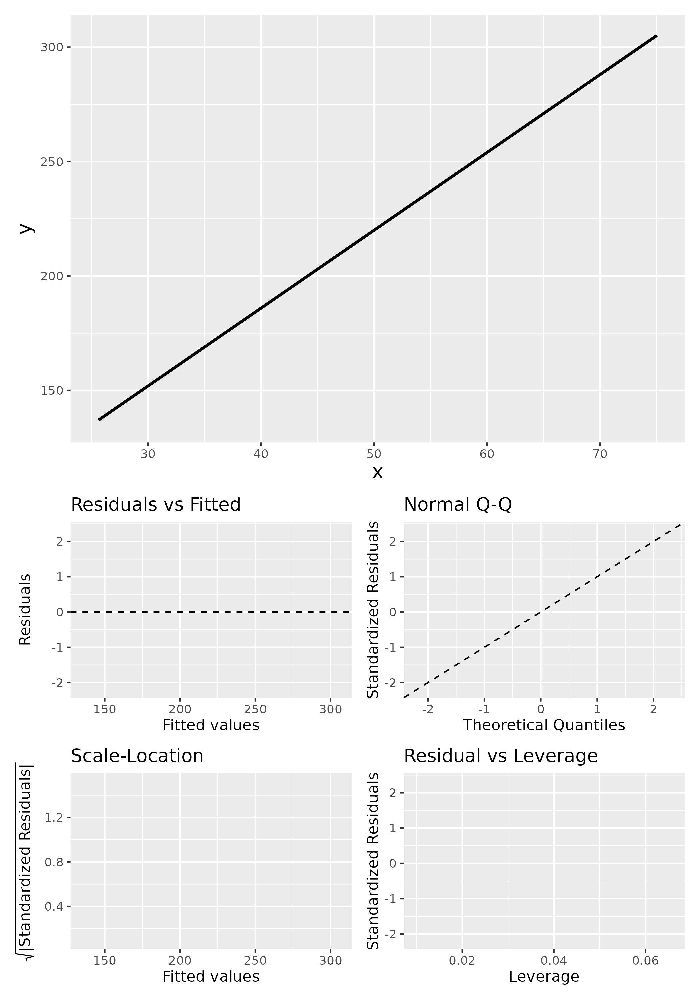
lm()
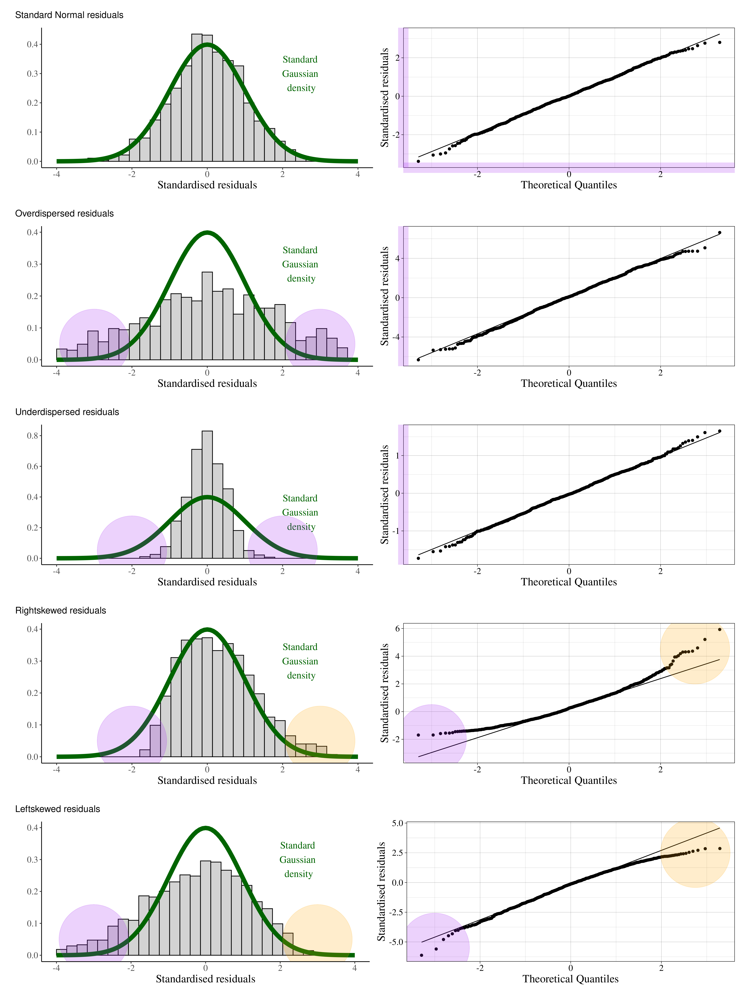
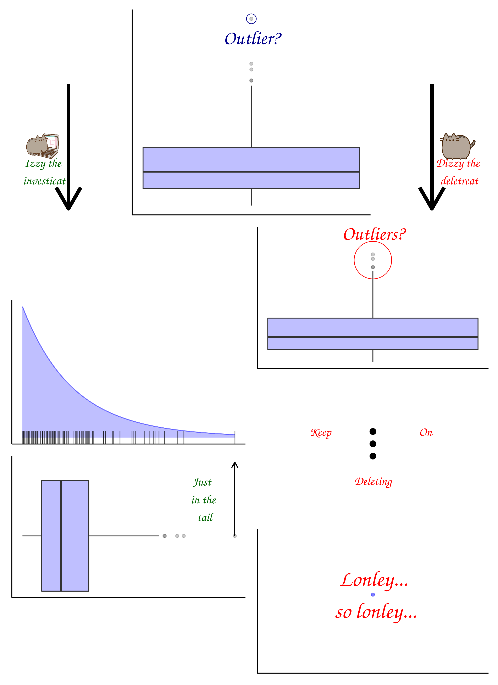
Below, we investigate the relationship between the photosynthetic rate (µmol CO2 \(m^-2 s^-1\)) of sunflower leaves and light intensity (PAR, µmol \(m^-2 s^-1\)) (the plot below shows a subset of the data detailed in Davis, Mason, and Goolsby (2026)).
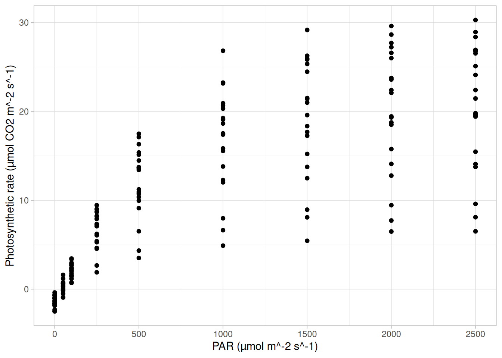
What does a linear model look like for these data?
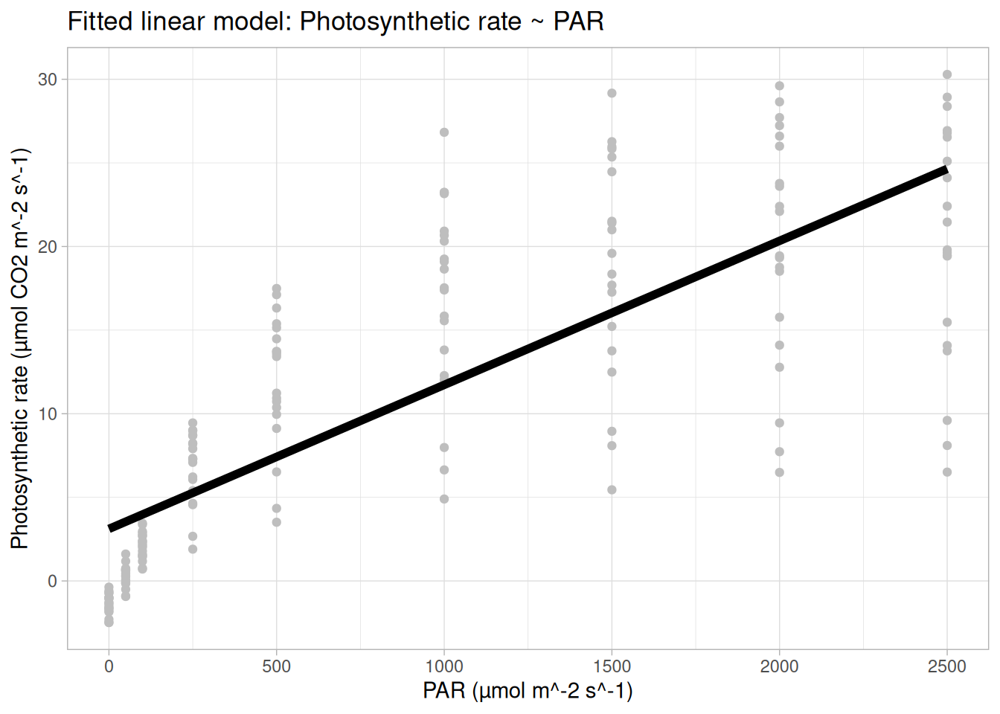
And the residual plots?
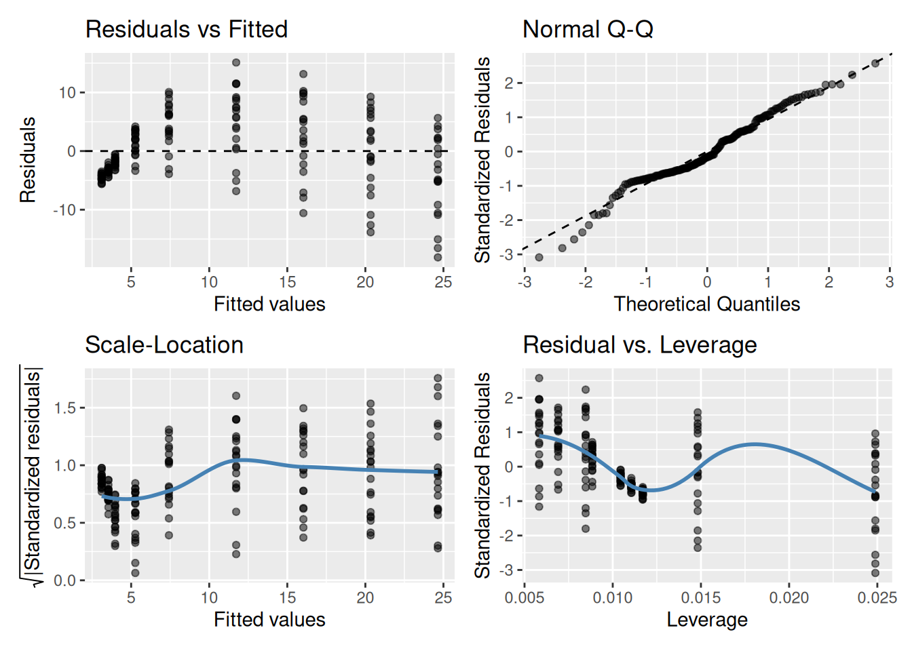
OK, so not a great fit. Could we perhaps improve our fit using other variables? Note, these data are contained in the R package photosynthesisLRC (Davis and Goolsby (2025)) as the object sunflowers:
require(photosynthesisLRC)
data <- sunflowers[sunflowers$Replicate == 1,]In your groups, fit, interpret, and critique the models below? Which is the “best” fitting model (out of the three fitted below)? Create a plot of this model and be prepared to share it as I wander around the class.
## MODEL 1
fit_01 <- lm(A ~ PARi, data = data)
summary(fit_01)
anova(fit_01)
## MODEL 2
fit_02 <- lm(A ~ PARi + Species, data = data)
summary(fit_02)
anova(fit_02)
## MODEL 3
fit_03 <- lm(A ~ PARi * Species, data = data)
summary(fit_03)
anova(fit_03)
## model fit
AIC(fit_01, fit_02, fit_03)
anova(fit_01,fit_02, fit_03)Q1. Which model is preferred based on AIC?
Q2. What does the ANOVA comparison between Model 1 and Model 2 indicate?
Q3. What does the ANOVA comparison between Model 2 and Model 3 indicate?
Q4. Which statement best describes Model 3 biologically?
Q5. Why is Model 3 preferred despite having more parameters?
Now, Davis and Goolsby (2025) is an R package that
Provides functions for modeling, comparing, and visualizing photosynthetic light response curves using established mechanistic and empirical models like the rectangular hyperbola Michaelis-Menton based models…
For example, one such function is Equation 1 of Lobo et al. (2013):
\[A = \frac{\alpha \, I \, A_{\max}}{\alpha \, I + A_{\max}} - R_d\]
where, \(A\) = net photosynthesis, \(I\) = irradiance (light intensity), \(\alpha\) = apparent quantum efficiency (initial slope), \(A_{\max}\) = maximum gross photosynthesis, and \(R_d\) = dark respiration.
Below we plot this mechanistic non-linear model for our data in R.
## plotting a mechanistic (non-linear) model to our data
photosyn_fun <- function(PARi, alpha = 5.4e-02, Amax = 27.5, Rd = 1.94) {
(alpha * PARi * Amax) / (alpha * PARi + Amax) - Rd
}
pari <- seq(min(data$PARi), max(data$PARi), length.out = 1000)
preds <- data.frame( A_expected = photosyn_fun(pari), PARi = pari)
ggplot(data, aes(x = PARi, y = A)) +
geom_point(col = "grey") + theme_light() +
geom_line(data = preds, aes(y = A_expected), size = 2) +
xlab("PAR (µmol m^-2 s^-1)") + ylab("Photosynthetic rate (µmol CO2 m^-2 s^-1)") +
ggtitle("Mechanistic model for the photosynthetic rate")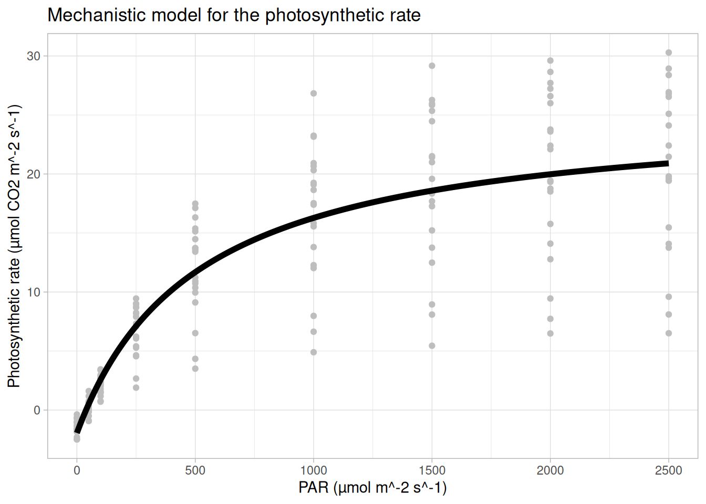
lm() for this?… but the aim of today is to show you how a polynomial regression model fitted using lm() can recreate the shape of a non-linear model
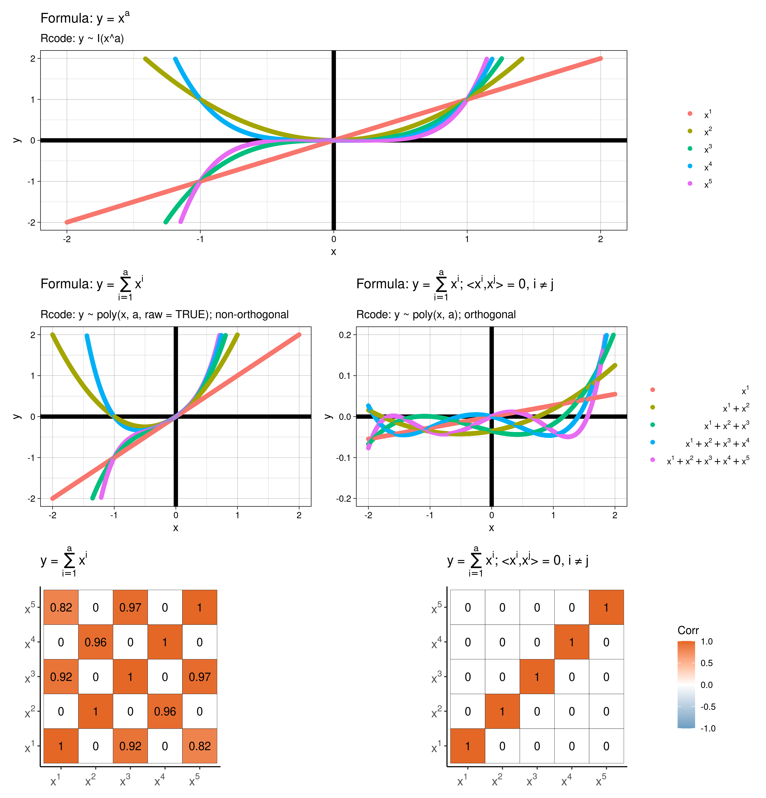
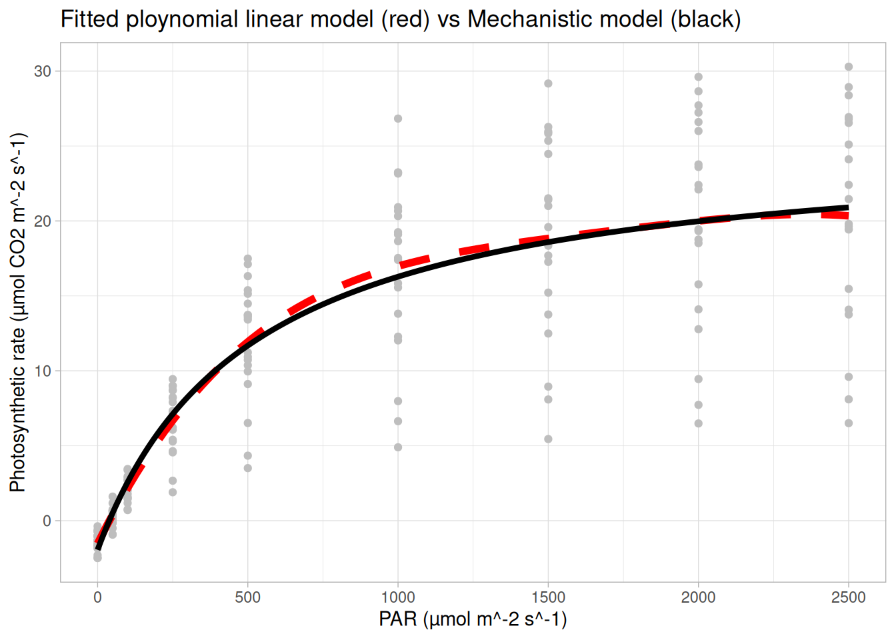
Above show my best lm() model to ‘recreate’ the mechanistic curve above. Note
I(x^a) or poly(x, a), I’m not telling you which ones!)Species information, but from above it seems like this would be important information to include in a model…In your groups discuss what may be an appropriate model for these data. This will be an iterative process. Fit & interpret your “best” model, Discuss, how you decided on your “best” model.
You may find the function dredge from the R package MuMIn useful for model selection. dredge() generates a model selection table of models with combinations of fixed effect terms in the given global (full) model. By default dredge() uses AICc as its model comparison metric. (p.s. you may need to set na.action = na.fail in your lm() call for dregde() to work)
In-class content
Figure 1 in Klemm and Jones-Todd (2026) shows which “surprise” dresses were worn during which concerts in Taylor Swift’s Eras Tour. According to the text of the article, Figure 1 is supposed to show:
In your groups take a look at Figure 1 and roast (yes you can be as mean as you like, honestly) or admire it4 You will have no doubt read and digested this section of the course guide, so you will have some basis for critiquing the plot.
Be prepared to discuss your progress/thoughts as we wander around the class.
The code below (which will open given a keyword) creates the figure you’ve been roasting. Now it’s your turn to follow through on your critiques. Using the code below as a baseline (if you wish) create a new and improved version of Figure 1.
Be prepared to show us your progress as we wander around the class! Remember to take the opportunity to pick Paul’s brain!
Pay attention for the keyword to unlock what’s below!
UPDATE: Any activities posted here are for you to complete in your own time. Completing them (either individually or with your peers) will aid your understanding of the content covered in class.
Building on Section 3.3 here you’ll be carrying out some basic EDA and interpreting hypothesis tests.
In this task you’re going to be using these data collected as part of a (now retracted) study (Shu et al. (2012))5.
The data comes from a study that claims to show that people are less likely to act dishonestly when they sign an honesty pledge at the top of a form rather than at the bottom of a form. Participants received a worksheet with 20 math puzzles and were offered $1 for each puzzle they (reported to have) solved correctly within 5 minutes. After the 5 minutes passed, participants were asked to count how many puzzles they solved correctly and then throw away their worksheets. The goal was to mislead participants into thinking that the experimenter could not observe their true performance, when in fact they could because each worksheet had a unique identifier. Thus, participants could cheat (and earn more money) without fear of being caught, while the researchers could observe how much each participant had cheated. Participants then completed a “tax” form reporting how much money they had earned, and also how much time and money they spent coming to the lab. The experimenters partially compensated participants for those costs.
The paper reported very large effects. Signing at the top vs. the bottom lowered the share of people over-reporting their math puzzle performance from 79% to 37% (p = .0013), and lowered the average amount of over-reporting from 3.94 puzzles to 0.77 puzzles (p < .00001). Similarly, it nearly halved the average amount of claimed commuting expenses, from $9.62 to $5.27 (p = .0014).
Variables of interest
Cond: = 0, No signature; = 1, Signed at the top; and = 2, Signed at the bottom.CheatedOnMatrixTax: = 0, participants didn’t cheat/over-report their maths puzzle performance; and = 1, participants did cheat/over-report their maths puzzle performance.OverReport: the amount of puzzles solved participants over-reported by.SumDeduction: the amount of claimed commuting expenses $US (corrected for the true amount).As a group:
Discuss what to the presented results indicate/claim?
Use the variables listed above and reproduce the results quoted above using the appropriate statistical analysis/test. How easy was it to replicate these results given the way the results were presented? How might you improve the way the results were presented?
There is an additional column of interest flag; this is a binary variable that indicates if the observations were considered dodgy (i.e., fraudulent) or not. Create a visualization/carry out some analysis that could be used as evidence for/against this belief.
Below is a plot of some data collected as part of a study carried out by Abdul Hamid, Omar, and Sanny (2019).

Figure 1 from Abdul Hamid, Omar, and Sanny (2019)
Write a reproducible R script that simulates these data as best you can.
Work through the code snippets from this section of the course guide Sums of squares (SS), you may have to refer to previous sections (e.g., the One-Way Analysis of Variance (ANOVA) section from Module 2) if you are unfamiliar with some of the terminology, and discuss/answer the following
You may find the pseudo code below useful.
## template only, you will have to rename variables accordingly
## run segments/lines one at a time to see the steps
data %>%
mutate(grand_mean = mean(response)) %>%
mutate(sstotal = (response - grand_mean) ^2 ) %>%
group_by(treatment) %>%
mutate(treatment_mean = mean(response),
sse = (response - treatment_mean)^2,
tmp = (treatment_mean - grand_mean)^2) %>%
summarise(ss_tot = sum(sstotal), ss_e = sum(sse), ss_treat = sum(tmp)) %>%
pull(ss_treat) %>% sum()Work though each of the case studies given below answering/discussing the prompts as you go. You’ll notice a few extra packages and functions getting used :-)
Revisiting ?@sec-multi may be useful here.
library(tidyverse)
library(predictmeans) ## install using install.packages("predictmeans")
rats <- read_csv("https://raw.githubusercontent.com/STATS-UOA/databunker/master/data/crd_rats_data.csv")
rats <- rats %>%
mutate(Surgery = as.factor(Surgery))
## CRD analysis
rats_lm <- lm(logAUC ~ Surgery, data = rats)
## Prompt 1: interpret the output from summary(rats_lm)$coef
summary(rats_lm)$coef
## Prompt 2: interpret the output from anova(rats_lm)
anova(rats_lm)
## Prompt 3, 4, and 5
## what do the specified arguments to predictmeans() do? (HINT: use R help)
## what are the elements returned in the object pm?
## specify plot = TRUE in the predictmeans() call, how would you interpret the resulting plot?
pm <- predictmeans::predictmeans(rats_lm , modelterm = "Surgery",
pairwise = TRUE, plot = FALSE)
pm ## a lot of output
## Prompt 6: what are the three lines of code doing after this prompt?
url <- "https://gist.github.com/cmjt/72f3941533a6bdad0701928cc2924b90"
devtools::source_gist(url, quiet = TRUE) ## install using install.packages("devtools")
comparisons(pm)
## Prompt 7: explain each element of the calculations going into creating the object HSD
HSD <- (qtukey(p = 1 - 0.05, nmeans = 3, df = 12 - 3)/sqrt(2))*sqrt(2 * anova(rats_lm)[2,3] / 4)
TukeyHSD(aov(logAUC ~ Surgery, data = rats))
## Prompt 8: Use all the relevant pieces of the script (hint what is the alpha.adj object below?) to calculate the pairwise comparison between Surgery C and S, using Fisher’s, Bonferonni’s, and Tukey’s correction methods respectively. You should state the difference, and 95% CI in each case. What do you notice about these three intervals? How are they similar/dissimilar? Show your workings.
alpha.adj <- 0.05/choose(3,2)
## Prompt 9: Produce a plot that compares the three methods aboveRevisiting ?@sec-mods may be useful here.
library(tidyverse)
data <- readr::read_csv("https://raw.githubusercontent.com/STATS-UOA/databunker/master/data/factorial_expt.csv")
## below we change the treatments to factors, simply because later on if we
## use predictmeans it will have a tantrum if this isn't the case
data <- data %>%
mutate(Disease = as.factor(Disease)) %>%
mutate(Organ = as.factor(Organ))
## Prompt 1: what model has been fitted here and what does the output from the anova() call indicate?
model <- lm(logAUC ~ Disease*Organ, data = data)
anova(model)
## Prompt 2: what model has been fitted here and what does the output from the anova() call indicate?
model_2 <- lm(logAUC ~ Organ*Disease, data = data)
anova(model_2)
#####################################
##****making the data unbalanced***
data_sub <- data[-c(1:3, 10),]
#####################################
## Prompt 3: what model has been fitted here and what does the output from the anova() call indicate?
mod <- lm(logAUC ~ Disease*Organ, data = data_sub)
anova(mod)
## Prompt 4: what model has been fitted here and what does the output from the anova() call indicate?
mod_2 <- lm(logAUC ~ Organ*Disease, data = data_sub)
anova(mod_2)
## Prompt 5: run and interpret the output from the following code, what do you conclude?
pm <- predictmeans::predictmeans(model = mod ,modelterm = "Disease:Organ",
pairwise = TRUE)Visiting this section of the course guide may be useful.
require(tidyverse)
require(lme4)
require(predictmeans)
rcbd <- read_csv("https://raw.githubusercontent.com/STATS-UOA/databunker/master/data/rcbd.csv")
## turn appropriate variables into factors
rcbd <- rcbd %>%
mutate(Run = as.factor(Run)) %>%
mutate(Surgery = as.factor(Surgery))
## run as a fixed effect
lm(logAUC8 ~ Run + Surgery, data = rcbd) |> summary()
## run as a random effect, what's the difference?
lmm <- lme4::lmer(logAUC8 ~ Surgery + (1|Run), data = rcbd)
summary(lmm)
## diagnostics estimated variance partitioning and more...
## these are really useful utility functions!
predictmeans::residplot(lmm)
predictmeans::R2_glmm(lmm)
predictmeans::se_ranef(lmm)
predictmeans::varcomp(lmm)
predictmeans::permmodels(lmm) ## remember permutation tests, what are we using them for here? Compare to a summary() outputNow, we’re going to get a little more advanced and model some data from Bliss-Moreau and Baxter (2019) (data retrieved from Bliss-Moreau and Baxter (2020)). To do so we’re following along (somewhat) with the steps summarised in Dan (2022). Revisiting ?@sec-randomeff may, again, be useful here.
## wrangle as per Dan's blog
require(tidyverse)
data <- read_csv("https://raw.githubusercontent.com/STATS-UOA/databunker/master/data/monkey.csv")
data %>%
ggplot(., aes(x = age, y = Activity)) +
geom_point()
## Number of active intervals in the first two minutes (0-8)
activity_2mins <- data |>
filter(obs<9) |> group_by(subj_id, Day) |>
summarize(total=sum(Activity),
active_bins = sum(Activity > 0),
age = min(age)) |>
rename(monkey = subj_id, day = Day) |>
ungroup()
length(table(activity_2mins$monkey))
activity_2mins %>%
ggplot(., aes(x = age, y = total, col = as.factor(monkey))) +
facet_wrap(~day) +
geom_point() + theme(legend.position = "none")
## Linear model...
fit_lm <- lm(active_bins ~ age*factor(day) + factor(monkey), data = activity_2mins)
fit_lm |>
summary()
## ignore monkeys
fit_lm_pool <- lm(active_bins ~ age*factor(day), data = activity_2mins)
fit_lm_pool |>
summary()
fit_lm_pool |> gglm::gglm() ## and what do we think here?
## plot
plot(fit_lm_pool$fitted, fit_lm_pool$residuals)
## why scale?
age_centre <- mean(activity_2mins$age)
age_scale <- diff(range(activity_2mins$age))/2
active_bins_centre <- 4
activity_2mins_scaled <- activity_2mins |>
mutate(monkey = factor(monkey),
day = factor(day),
age_centred = (age - age_centre)/age_scale,
active_bins_scaled = (active_bins - active_bins_centre)/4)
glimpse(activity_2mins_scaled)
## Monkey as a random effect, why? Is this sensible?
aov(active_bins_scaled ~ age_centred*day + Error(monkey), data = activity_2mins_scaled) |>
summary()
## formula
formula <- active_bins_scaled ~ age_centred*day + (1 | monkey)
## lme4
library(lme4)
fit_lme4 <- lme4::lmer(formula, activity_2mins_scaled)
fit_lme4 |>
summary()
predictmeans::predictmeans(fit_lme4, "day")
## lmerTest, is this the same model as above
library(lmerTest)
fit_lmerTest <- lmerTest::lmer(formula, activity_2mins_scaled)
fit_lmerTest |>
summary()
predictmeans::predictmeans(fit_lmerTest, "day")
## glmmTMB, is this the same model as above
library(glmmTMB)
fit_glmmtmb <- glmmTMB::glmmTMB(formula, activity_2mins_scaled)
fit_glmmtmb |> summary()
## and what does this show?
emmeans::emmeans(fit_glmmtmb, specs = "day") |>
plot(pairwise = TRUE)R code solutions
This section will be update with my suggested solutions to the class wide activities after their conclusion. I strongly recommend that you review these outside of class if only to familiarise yourself with a different approach.
require(tidyverse)
## read in data
data <- readr::read_csv("https://raw.githubusercontent.com/STATS-UOA/databunker/master/data/BMI.csv")
data
## Mean BMI
data %>%
summarise(mean(bmi)) %>%
round()
## Max BMI males
data %>%
filter(gender == "male") %>%
filter(bmi == max(bmi))
## t-test BMI males vs females
t.test(bmi ~ gender, data = data)
lm(bmi ~ gender, data = data) |> summary()
## t-test steps males vs females
t.test(steps ~ gender, data = data)
lm(steps ~ gender, data = data) |> summary()
## plotting. ALWAYS PLOT YOUR DATA!
ggplot(data, aes(x = steps, y = bmi, col = gender)) +
geom_point()## data source: https://docs.google.com/spreadsheets/d/1YSJ4ypkYLq6j1mIBJCgUHhHjJZQ0Rkfe1qW2WC5HLiw/edit#gid=748627588
library(tidyverse)
data <- read_csv("https://raw.githubusercontent.com/STATS-UOA/databunker/master/data/marvel_movies.csv") %>%
mutate(critics_score = as.numeric(str_replace_all(`critics % score`, "%", ""))) %>%
mutate(budget_recovered = as.numeric(str_replace_all(`% budget recovered`, "%", "")))
##### ##### ##### ###
##### Model 1 #######
##### ##### ##### ###
data %>%
lm(budget_recovered ~ critics_score, data = .) |>
summary()
## Ans
data %>%
ggplot(., aes(y = budget_recovered, x = critics_score)) +
geom_smooth(method = "lm", se = FALSE) + ylab(" Estimated budget_recovered")
## w. data
data %>%
ggplot(., aes(y = budget_recovered, x = critics_score)) +
geom_smooth(method = "lm", se = FALSE) + geom_point()
##### ##### ##### ###
##### Model 2 #######
##### ##### ##### ###
names(table(data$category))
mod <- data %>%
lm(budget_recovered ~ category, data = .)
mod |> summary()
## Ans
data$pred_vals <- predict(mod)
## plot
data %>%
ggplot(aes(y = pred_vals, x = category)) +
geom_point(size = 15, pch = "-") + ylab(" Estimated budget_recovered")
##### ##### ##### ###
##### Model 3 #######
##### ##### ##### ###
mod <- data %>%
lm(budget_recovered ~ critics_score + category, data = .)
mod |> summary()
## Ans
data$pred_vals <- predict(mod)
## plot
data %>%
ggplot(aes(y = pred_vals, x = critics_score, color = category)) +
geom_line() + ylab(" Estimated budget_recovered")
##### ##### ##### ###
##### Model 4 #######
##### ##### ##### ###
data <- data %>%
rename(., "worldwide" = `worldwide gross ($m)`, "domestic" = `domestic gross ($m)`,
"international" = `international gross ($m)`)
mod <- lm(worldwide ~ 0 + domestic + international, data = data)
mod |> summary()
## Ans
## plot
require(rsm) ## install if not available
persp(mod, form = ~ 0 + domestic + international)
image(mod, form = ~ 0 + domestic + international)
##### ##### ##### ###
##### Model 5 #######
##### ##### ##### ###
mod <- lm(worldwide ~ budget*critics_score, data = data)
mod |> summary()
## Ans
## plot
persp(mod, form = ~ budget*critics_score)
image(mod, form = ~ budget*critics_score)Number of time until the first repeat (in this case Blurple)
final_leg_outfits <- c("Cotton candy", "Blurple", "Grapefruit", "Popsicle", "Sunset orange",
"Blurple", "Cotton candy", "Popsicle", "Grapefruit", "Popsicle",
"Blurple", "Grapefruit", "Cotton candy", "Popsicle", "Blurple",
"Blurple", "Blurple", "Blurple")
## times until first repeat
## in this case Blurple, with 5 outfits before repeat
obvs <- which(duplicated(final_leg_outfits))[1] - 1
randomisation <- function(data, nreps = 1000, seed = 1984){
sampling_dist <- numeric(nreps)
set.seed(seed)
for (i in 1:nreps) {
sampling_dist[i] <- (which(duplicated(sample(data)))[1] - 1)
}
return(sampling_dist)
}
sampling_distribution <- randomisation(final_leg_outfits)
hist(sampling_distribution)
abline(v = obvs, lwd = 2)Number of times we have Sunset Orange thrice in a row
europe_leg_outfits <- c("Flamingo pink", "Ocean blue", "Sunset orange", "Ocean blue",
"Flamingo pink", "Sunset orange", "Ocean blue", "Sunset orange",
"Flamingo pink", "Sunset orange", "Ocean blue", "Flamingo pink",
"Sunset orange", "Ocean blue", "Sunset orange", "Flamingo pink",
"Flamingo pink", "Ocean blue", "Sunset orange", "Sunset orange",
"Sunset orange", "Ocean blue", "Flamingo pink", "Ocean blue",
"Flamingo pink", "Sunset orange", "Sunset orange", "Ocean blue",
"Flamingo pink", "Sunset orange", "Flamingo pink", "Sunset orange",
"Ocean blue", "Sunset orange", "Ocean blue", "Flamingo pink",
"Sunset orange", "Ocean blue", "Flamingo pink", "Sunset orange",
"Ocean blue", "Sunset orange", "Flamingo pink", "Ocean blue",
"Flamingo pink", "Sunset orange", "Flamingo pink", "Sunset orange")
## Sunset orange only appears exactly thrice in a row once
run_lengths <- rle(europe_leg_outfits) ## inbuilt R function for run lengths
obvs <- sum(run_lengths$values == "Sunset orange" & run_lengths$lengths == 3)
randomisation <- function(data, nreps = 1000, seed = 1984){
sampling_dist <- numeric(nreps)
set.seed(seed)
for (i in 1:nreps) {
x <- sample(data) |> rle()
sampling_dist[i] <- sum(x$values == "Sunset orange" & x$lengths == 3)
}
return(sampling_dist)
}
sampling_distribution <- randomisation(europe_leg_outfits)
hist(sampling_distribution)
abline(v = obvs, lwd = 2)lm() assumptions in Section 7.2.1require(ggplot2)
require(gglm)
#####################
### non-linearity ###
#####################
n <- 100
x <- runif(n,0,10)
resp <- 3 + 0.5*x^2 + rnorm(n)
df <- data.frame(resp = resp, x = x)
ggplot(data = df, aes(x = x, y = resp)) +
geom_point() +
geom_smooth(formula = y ~ x, se = FALSE, method = "lm")
fit <- lm(resp ~ x, data = df)
gglm::gglm(fit)
#############################
### non-constant variance ###
#############################
resp <- 3 + 0.5*x + rnorm(n, 0, x)
df <- data.frame(resp = resp, x = x)
ggplot(data = df, aes(x = x, y = resp)) +
geom_point() +
geom_smooth(formula = y ~ x, se = FALSE, method = "lm")
fit <- lm(resp ~ x, data = df)
gglm::gglm(fit)
####################################
### non-'normality' of residuals ###
####################################
resp <- 3 + 0.5*x + rgamma(n, shape = 2, rate = 0.3)
df <- data.frame(resp = resp, x = x)
ggplot(data = df, aes(x = x, y = resp)) +
geom_point() +
geom_smooth(formula = y ~ x, se = FALSE, method = "lm")
fit <- lm(resp ~ x, data = df)
gglm::gglm(fit)
########################
### non-independence ###
########################
## tends to be more data related
n_id <- 4
id <- rep(1:n_id, each = 25)
offset <- rnorm(n_id, 0, 3)
resp <- 2 + 0.5*x + offset[id] + rnorm(n)
df <- data.frame(resp = resp, x = x)
ggplot(data = df, aes(x = x, y = resp)) +
geom_smooth(formula = y ~ x, se = FALSE, method = "lm") +
geom_point(aes(col = as.factor(id)))
fit <- lm(resp ~ x, data = df)
plot(residuals(fit), col = as.factor(id), pch = 20)
abline(h = 0)
########################
### 'high' leverage ###
########################
## 'high' x
x[10] <- 15
resp <- 3 + 0.5*x + rnorm(n)
df <- data.frame(resp = resp, x = x)
ggplot(data = df, aes(x = x, y = resp)) +
geom_point() +
geom_smooth(formula = y ~ x, se = FALSE, method = "lm")
fit <- lm(resp ~ x, data = df)
gglm::gglm(fit)
plot(fit, which = 5)
########################
### 'high' influence ###
########################
## 'high' x
x <- runif(n,0,10)
resp <- 3 + 0.5*x + rnorm(n)
resp[10] <- 15
df <- data.frame(resp = resp, x = x)
ggplot(data = df, aes(x = x, y = resp)) +
geom_point() +
geom_smooth(formula = y ~ x, se = FALSE, method = "lm")
fit <- lm(resp ~ x, data = df)
gglm::gglm(fit)
plot(fit, which = 5)require(ggplot2)
photosyn_fun <- function(PARi, alpha = 5.4e-02, Amax = 27.5, Rd = 1.94) {
(alpha * PARi * Amax) / (alpha * PARi + Amax) - Rd
}
pari <- seq(min(data$PARi), max(data$PARi), length.out = 1000)
preds <- data.frame( A_expected = photosyn_fun(pari), PARi = pari)
poly_lm <- lm(A ~ poly(PARi, 4), data = data, na.action = na.fail)
ggplot(data, aes(x = PARi, y = A)) +
geom_point(col = "grey") + theme_light() +
xlab("PAR (µmol m^-2 s^-1)") + ylab("Photosynthetic rate (µmol CO2 m^-2 s^-1)") +
geom_smooth(method = "lm", formula = y ~ poly(x, 4), se = FALSE, col = "red", lty = "dashed", size = 2) +
geom_line(data = preds, aes(y = A_expected), col = "black", size = 1.5) +
ggtitle("Fitted ploynomial linear model (red) vs Mechanistic model (black)")The former example is a solution posed on this StackOverflow post asking about email address validation. The latter snippet is my attempt at a long winded (and far less stable) approach.↩︎
R. A. Fisher’s work in the area of experimental design is, perhaps, the most well known in the field. The principles he devised we still abide by today. Note, however, to give a balanced view of the celebrated mathematician many of his views (on eugenics and race in particular) are considered unethical by many. I would urge you to read up on his work in this area and come to your own conclusions.↩︎
the acoustic setlist during each concert↩︎
Note that your lecturer is an author of the publication and she consents to the roasting!↩︎
See this Guardian article about the debacle↩︎
{kind=link}